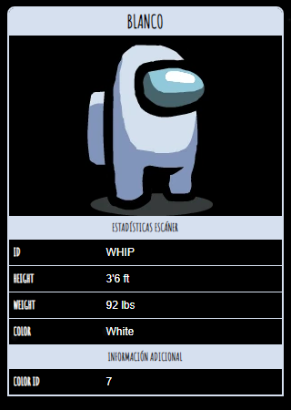

Blanco

Blanco
es uno de los colores de Among Us que los jugadores pueden personalizar.
Curiosidades
- Blanco se usa en todos los íconos destinados a representar juegos en línea, y también se muestran usando un megáfono en la página de anuncios del juego.
- En el mapa de Polus , Blanco se asoma por el lado izquierdo de la puerta del cubículo del medio en el baño conectado al Laboratorio.
- En la sección Tripulante en "Cómo jugar", se muestra a Blanco arreglando el sabotaje del Reactor junto con Rosa.